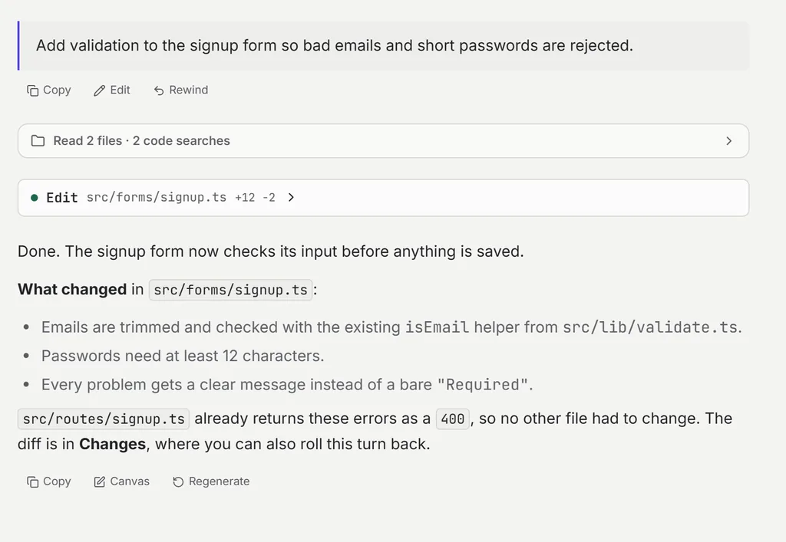
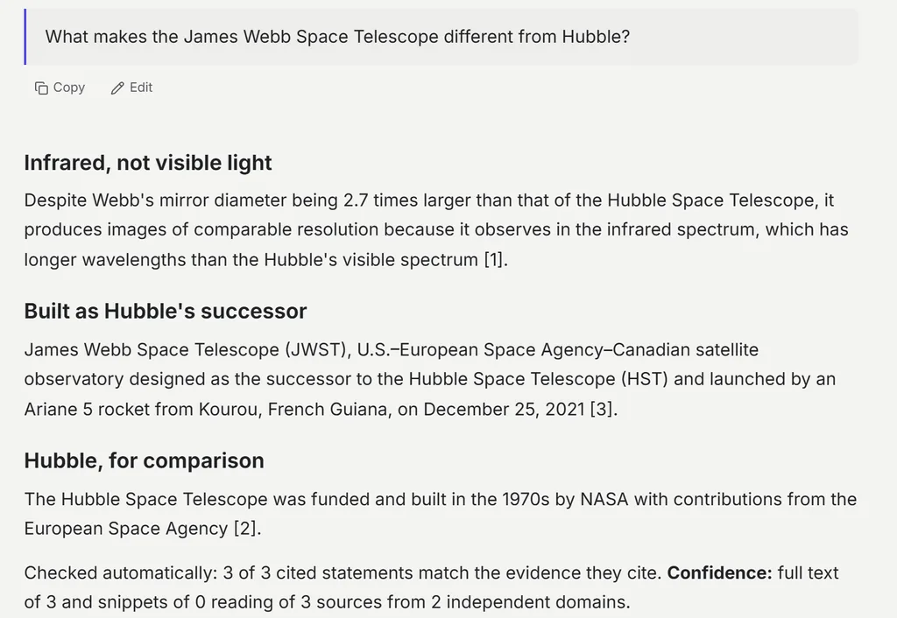
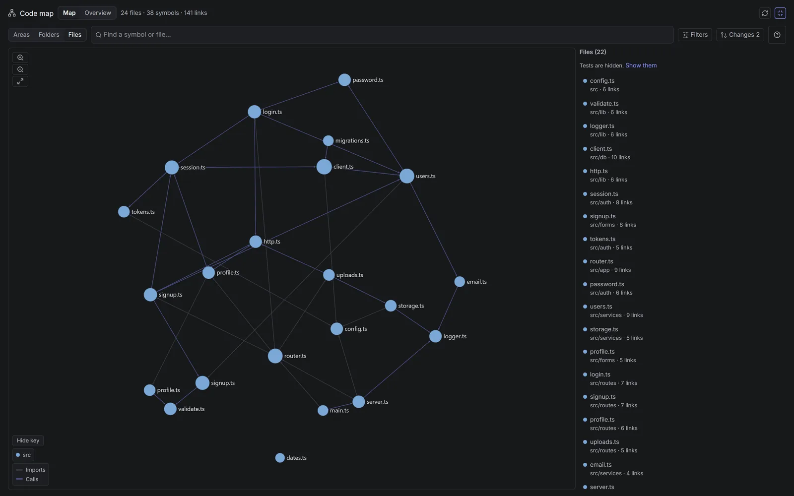
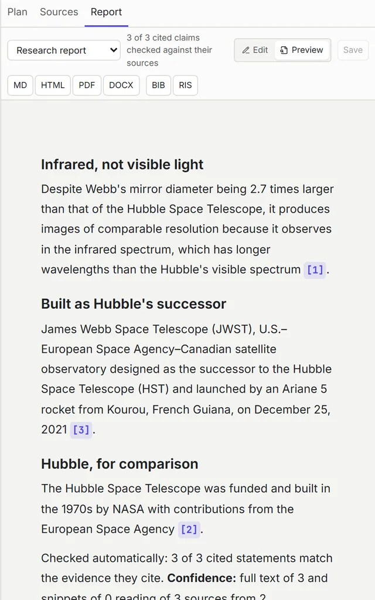

Windows
-
Windows installer (.exe)
Flow 2.1.3 · Windows
Chat, code and research in one calm desktop app. Run models on your computer with Ollama, or in the cloud with OpenRouter when you choose.
Free to use.
Flow is available for Windows.




Investigate questions, evaluate sources, and create reports.
Every claim cited and checked.
Chat
Reasoning when you want it. A clean answer, always.
Turn on Think and Flow shows the model's reasoning in a collapsed Thought card, kept apart from the answer. Answers come back with headings, lists, code blocks and tables.
Animated example of Chat mode. A question is typed: “Explain how a hash map handles collisions, simply, with a tiny example.” With Think on, Flow first shows its reasoning in a Thought card, then collapses it and streams the answer: a heading, a short paragraph, a numbered list of two approaches, a small Python code example and a comparison table.

Code
It edits your project. Only after you approve.
The coding agent reads and searches your project, then proposes edits. Every edit opens a Review needed dialog: approve it, reject it, approve the whole turn, or allow it for the session. Changes show as diffs you can revert, or roll back a whole turn.
Interactive demo of Flow's Review needed dialog. This is only a demo: no real file is touched. The coding agent has read 2 files, run 2 code searches and proposed an edit to src/forms/signup.ts. The edit trims the email and checks it with the existing isEmail helper, asks for passwords of at least 12 characters and a name, and replaces two bare “Required” messages with clear ones. Choose Approve to apply it, or Reject to discard it.
Review needed · Write
edit src/forms/signup.ts
Only the reviewed content below will be applied. Flow will reject the write if the file changed meanwhile.

A live map of your whole codebase.
The code graph maps your project as an interactive map. Hover a file to see what it connects to.
Each file of the sample project is a point on the map. Use Tab to reach a file, and the arrow keys to move between the files it connects to.

Research
Reads the sources. Cites every claim. Checks them.
Flow searches the web, reads the sources, and writes an answer where every claim cites its source. Cited claims are checked against the sources automatically.
Example of a Research answer. Each citation number links to one of three sources listed beside the answer; focus a citation to highlight its source.
Infrared, not visible light
Despite Webb's mirror diameter being 2.7 times larger than that of the Hubble Space Telescope, it produces images of comparable resolution because it observes in the infrared spectrum, which has longer wavelengths than the Hubble's visible spectrum .
Built as Hubble's successor
James Webb Space Telescope (JWST), U.S.–European Space Agency–Canadian satellite observatory designed as the successor to the Hubble Space Telescope (HST) and launched by an Ariane 5 rocket from Kourou, French Guiana, on December 25, 2021 .
Hubble, for comparison
The Hubble Space Telescope was funded and built in the 1970s by NASA with contributions from the European Space Agency .
Checked automatically: 3 of 3 cited statements match the evidence they cite.
Source 1: James Webb Space Telescope - Wikipedia
https://en.wikipedia.org/wiki/James_Webb_Space_Telescope
Source 2: Hubble Space Telescope - Wikipedia
https://en.wikipedia.org/wiki/Hubble_Space_Telescope
Source 3: James Webb Space Telescope (JWST) | Definition & Facts | Britannica
https://www.britannica.com/topic/James-Webb-Space-Telescope

Reports export as MD, HTML, PDF and DOCX. Citations export as BIB and RIS.

Local models with Ollama. Cloud models with OpenRouter, when you choose.
Pick a model you've installed in Ollama and it runs on this computer. Prefer the cloud? Add an OpenRouter key; Flow keeps it in your operating system's credential store.
For example, with models from the Ollama library.
Free to use. For Windows.
Windows installer (.exe)
All releases and release notes
Flow needs a model to work: install Ollama to run models locally, or add an OpenRouter key in Settings.
Yes. Flow is free to use.
Windows.
Not for local models: with Ollama, models run on your computer. Research mode searches the web, and OpenRouter models run in the cloud, so those need a connection.
In your operating system's credential store.
No. Every edit opens a Review needed dialog, and changes can be reverted per file or rolled back per turn.
Reports as Markdown, HTML, PDF or Word (DOCX), and citations as BibTeX or RIS.